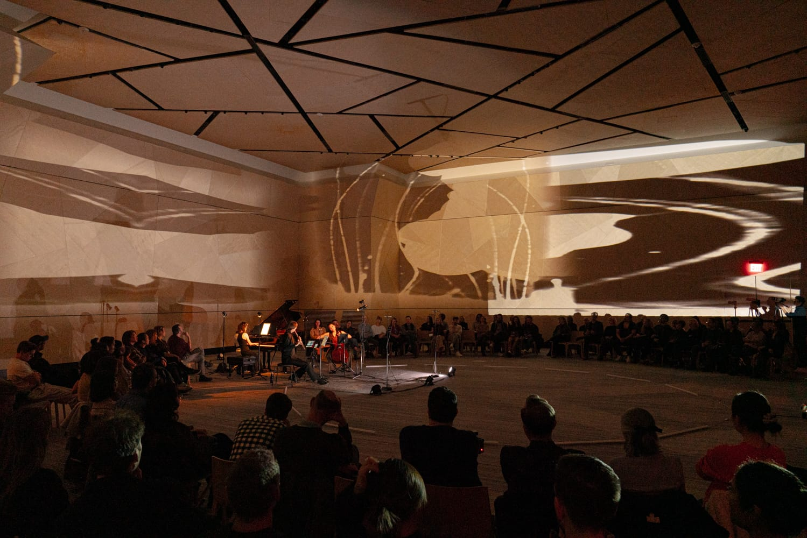

Currents

CreArtBox opens its twelfth New York season with Currents, on Friday, October 30, 2026 at 7:30 pm, at The DiMenna Center for Classical Music, 450 West 37th Street, between Ninth and Tenth Avenues in Midtown Manhattan. Chamber music for two to four players, about an hour without an intermission, with video art by Guillermo Laporta. Tickets start at $15.
Currents assembles five works around a single idea: movement carried from one place to another.
Two take the idea literally. Guillermo Laporta's Brown Leaves Moving (2018), from the suite AWAVE first performed in Queens that year, begins with the players offstage. They walk on as they play, over an electronic background, so the ensemble forms in front of the audience instead of waiting for it. Eric Moe's Laminar Flow in Upsidedown Creek takes its title from the term in fluid dynamics for movement in smooth parallel layers with no mixing between them, the opposite of turbulence. It enters the season through CreArtBox's open Call for Scores.
The other three works trace a current of a different kind, the one running between Brahms and the Schumanns. Joseph Joachim received the dedication of Clara Schumann's Three Romances in 1853, and it was Joachim who read the viola part of Brahms's A minor Trio in rehearsal, the scoring heard here. Clara Schumann gave the first public performance of her husband's Piano Quartet at the Leipzig Gewandhaus in 1844, the work that closes the evening.
Josefina Urraca, piano. Emilie-Anne Gendron, violin. Matthew Cohen, viola. Julia Yang, cello. Video art by Guillermo Laporta. Approximately 60 minutes, played without intermission.
Program
- Guillermo LaportaBrown Leaves Moving (violin, viola, cello & piano) 4'
- Johannes BrahmsTrio in A minor, Op. 114 · I. Allegro (viola, cello & piano) 8'
- Eric MoeWinner of the open callLaminar Flow in Upsidedown Creek (violin, viola & cello) 5'
- Clara SchumannThree Romances, Op. 22 (violin & piano) 11'
- Robert SchumannPiano Quartet in E-flat major, Op. 47 (violin, viola, cello & piano) 28'
Performers
- Josefina Urracapiano
- Emilie-Anne Gendronviolin
- Matthew Cohenviola
- Julia Yangcello
- Guillermo Laportavideo art
About CreArtBox
CreArtBox is a New York–based chamber music ensemble founded in 2013, performing at The DiMenna Center for Classical Music and on tour internationally. The ensemble's New York Series presents approximately six productions a year - combining commissioned premieres, reimagined classics, and collaborations with visual artists, filmmakers, and writers.
In parallel, CreArtBox runs Festival ADAR each August in rural Asturias, Spain - an international arts festival pairing chamber music with site-specific performance in churches, hórreos, and mountain villages. Both the New York Series and Festival ADAR are produced by CreArtBox, Inc., a 501(c)(3) non-profit.